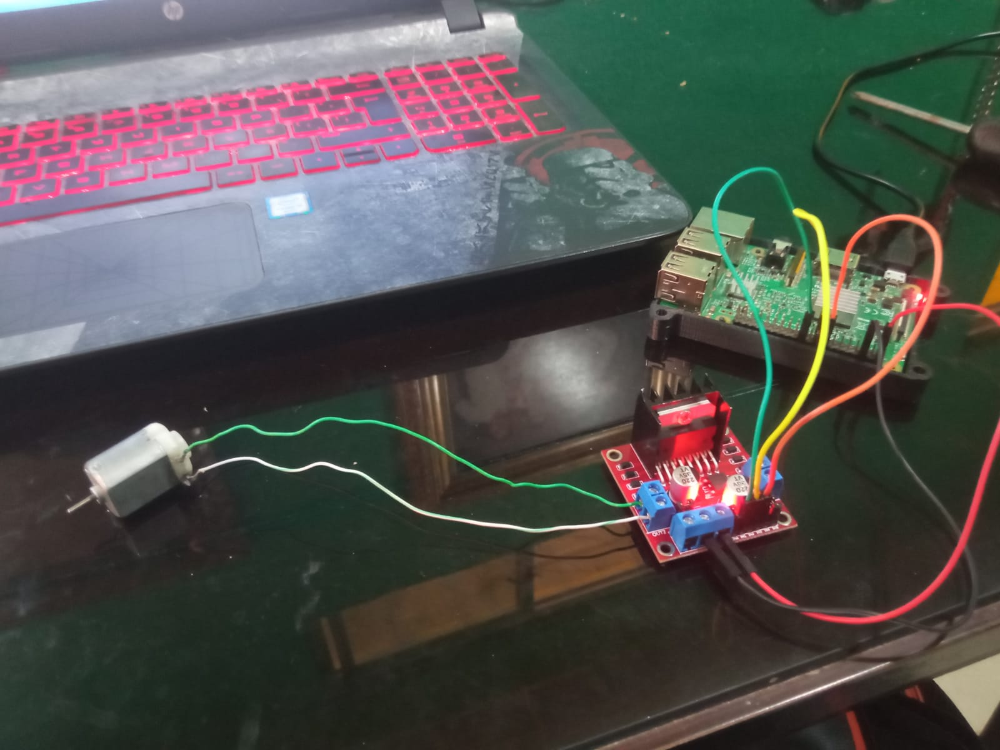
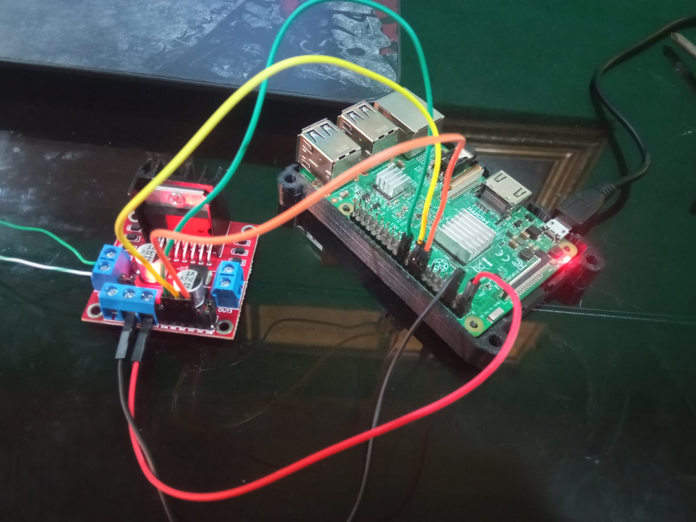
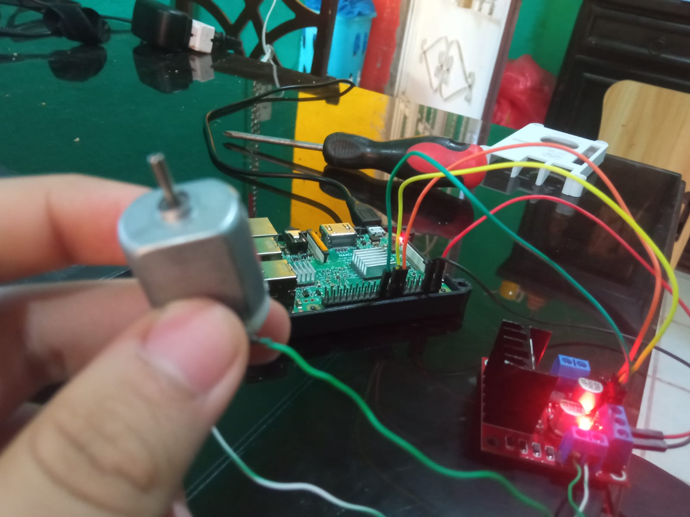
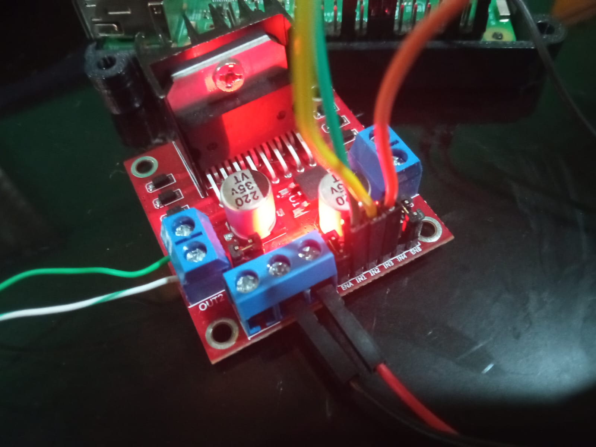

el codigo funciona para asignarle una direccion, y potencia al motor, en este caso si se requiere de una fuente de energia externa, como una bateria
import RPi.GPIO as GPIO
from time import sleep
GPIO.setwarnings(False)
in1 = 24
in2 = 23
en = 25
temp1 = 1
GPIO.setmode(GPIO.BCM)
GPIO.setup(in1, GPIO.OUT)
GPIO.setup(in2, GPIO.OUT)
GPIO.setup(en, GPIO.OUT)
GPIO.output(in1, GPIO.LOW)
GPIO.output(in2, GPIO.LOW)
p = GPIO.PWM(en, 1000)
p.start(25)
print("\n")
print("The default speed & direction of motor is LOW & Forward.....")
print("r-run s-stop f-forward b-backward l-low m-medium h-high e-exit")
print("\n")
while True:
x = input()
if x == 'r':
print("run")
if temp1 == 1:
GPIO.output(in1, GPIO.HIGH)
GPIO.output(in2, GPIO.LOW)
print("forward")
x = 'z'
else:
GPIO.output(in1, GPIO.LOW)
GPIO.output(in2, GPIO.HIGH)
print("backward")
x = 'z'
elif x == 's':
print("stop")
GPIO.output(in1, GPIO.LOW)
GPIO.output(in2, GPIO.LOW)
x = 'z'
elif x == 'f':
print("forward")
GPIO.output(in1, GPIO.HIGH)
GPIO.output(in2, GPIO.LOW)
temp1 = 1
x = 'z'
elif x == 'b':
print("backward")
GPIO.output(in1, GPIO.LOW)
GPIO.output(in2, GPIO.HIGH)
temp1 = 0
x = 'z'
elif x == 'l':
print("low")
p.ChangeDutyCycle(25)
x = 'z'
elif x == 'm':
print("medium")
p.ChangeDutyCycle(50)
x = 'z'
elif x == 'h':
print("high")
p.ChangeDutyCycle(75)
x = 'z'
elif x == 'e':
GPIO.cleanup()
print("GPIO Clean up")
break
else:
print("<<< wrong data >>>")
print("please enter the defined data to continue.....")
Realizado por Christopher Eduardo Barrientos Guerra